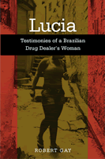

One woman's story of life in the slums of Rio de Janeiro
One woman's story of life in the slums of Rio de Janeiro


 One woman's story of life in the slums of Rio de Janeiro
One woman's story of life in the slums of Rio de Janeiro

|  |
LuciaTestimonies of a Brazilian Drug Dealer's WomanRobert Gaypaper EAN: 978-1-59213-339-0 (ISBN: 1-59213-339-8) |
"Rio de Janeiro is under siege. The poor communities and the favelas on the hills are submitted to a mix of terror and populism by the drug traffickers. The affluent classes live under fear of organized crime. Most of the police are involved in corruption and lethal violence. Despite this overwhelming presence, life in the favelas is not well known. Robert Gay has written a rigorous, but at the same time compassionate, study of the complex strategies for survival in those surroundings. In this outstanding book we are able to hear, through Lucia, the voice of those brave (and neglected) survivors."
—Paulo S�rgio Pinheiro, Senior Researcher, Center for the Study of Violence, University of Sao Paulo, and former Secretary of State for Human Rights, Brazil
Favelas, or shantytowns, are where cocaine is mainly sold in Rio de Janeiro. There are some six hundred favelas in the city, and most of them are controlled by well-organized and heavily armed drug gangs. The struggle for the massive profits from this drug trade has resulted in what are increasingly violent and deadly confrontations between rival drug gangs and a corrupt and brutal police force, that have transformed parts of the city into a war-zone. Lucia tells the story of one woman who was once intimately involved with drug gang life in Rio throughout the 1990s. Through a series of conversations with the author, Lucia describes conditions of poverty, violence, and injustice that are simply unimaginable to outsiders. In doing so, she explains why women like her become involved with drugs and gangs, and why this situation is unlikely to change.
Excerpt available at www.temple.edu/tempress
"Lucia is an outstanding book. Robert Gay does a splendid job of laying out and expanding the lives of Lucia and of those who intersect with her. He makes them live by explaining social organizations and institutions—gangs, prison, school, work, economy and religion—within the context of people's lives. Gay offers a rich, superbly readable narrative that develops these important themes. Lucia provides depth and breadth to a subject about which there is little empirical research; it teaches sociology in an interesting and informed way."
—Martha Huggins, Charles A. and Leo M. Favrot Professor of Human Relations, Tulane University
"If you can no longer recall the stomach-churning depictions of Rio de Janeiro favelas from the 2002 film City of God, this true account of one mujer's life in the Brazilian underworld—trying to survive local gangs and merciless rule of her drug-lord boyfriend—will bring it all back."
—Latina
"These transcripts reveal much about the structure and complexities of life in one of Rio de Janeiro's favelas or shantytowns. The testimonies of Lucia provide a unique glimpse into the social organization and institutions that provide the context within which inhabitants of these surroundings negotiate survival."
—Contemporary Sociology
"The mass of the book is a fascinating exchange between the author and his subject as he tries to learn from her and tell her story.... Gay has achieved an extraordinary result by providing profound insights into a particular type of life usually overlooked in academic writing. As a result he provides a very personal and real account of how the violence and poverty facing Rio de Janeiro affect the lives of the often voiceless people who have to live with its most brutal results. Gay has, indeed, achieved a different sort of social science."
—Qualitative Sociology
"Gay's Lucia offers a riveting portrait of the way these contending forces [gangs, drugs, the church] have shaped the life of one favela resident."
—Latin American Research Review
"It is a provocative account of Lucia, a young inhabitant of one of Rio de Janeiro's dozens of favelas (shantytowns), and her ill-fated quest to defy the notion of destiny. Among other things, the book serves as an exemplary ethnography. ...I recommend this book as a sociological primer in ethnographic research; as a grassroots analysis of Latin America's social, political, and economic structure; and as a fascinating example of literary nonfiction."
—Gender & Society
"[Gay�s] condemnation of political and economic forces linked to the state is vociferous...The silences in Gay�s book...are weighty and meaningful ones for those who would read between the lines. Lucia is a brave [experiment]."
—The Journal of Latin American and Caribbean Anthology
"The book largely consists of transcripts of recorded interviews Gay conducted with Lucia between 1999 and 2001. Gay has selected and structured the transcripts of Lucia�s narrated autobiography in such a way that one is quickly caught by the dreadful thought vivid story and likely to gain the necessary insight to understand what Lucia�s reflections entail....To conclude, this is a fascinating book that should be read by everyone who wants to learn more about life in the favelas of Rio de Janeiro."
—European Review of Latin American and Caribbean Studies
"[An] often heart-rending look into the life of one woman caught up in drug dealing, violence, police corruption and urban crime in Rio de Janeiro.... Gay's book combines a compelling first-person narrative with a balanced and accessibly written contextual analysis of the causes and effects of inequalities, urban violence and drug trafficking.... [T]he book's greatest strength [is] it offers a window into the particularities of one woman's life, a life like many others all too often dismissed or ignored."
—Luso-Brazilian Review
"The chapters are well-constructed, with telling interviews followed by two to four pages of sociological analysis of the dialogues' themes that place Lucia's experiences in larger context.... This book offers a rich portrait...not by presenting a theoretical treatise from an abstract perspective, but by providing a poignant portrait of how these inequalities are experienced by Lucia 'on the ground."
—Social Forces
"Lucia can almost be read as a novel, in which the reader anxiously wants to know the outcome of Lucia�s trajectory and shares the author�s declared hope that she manages to change her life. As a result, it is inevitable that the reader ends by partaking in the melancholy expressed by Gay as the book reaches its conclusion."
—The Journal of Latin American Studies
Foreword
Acknowledgments
Introduction
1. Getting In
Lucia's House
2. Rog�rio
Drug Gangs
3. Marcos
Police
4. Bruno
Prison
5. School
Education
6. Work
Economy
7. Born Again
Religion
8. Getting Out
Last Call
Epilogue
Notes
Glossary
Bibliography
Index
 | Robert Gay is Chair of the Department of Sociology at Connecticut College. He is the author of Popular Organization and Democracy in Rio De Janeiro: A Tale of Two Favelas (Temple). |
Latin American/Caribbean Studies
Sociology
Anthropology
Voices of Latin American Life, edited by Arthur Schmidt.
Voices of Latin American Life, edited by Arthur Schmidt, aims to bring the texture and humanity of Latin American experiences to English-language readers through translations of works that impart direct voices. Through testimonial literature, interviews, and essays, the series will present important Latin American views from the famous and the anonymous that reflect the immense challenges of fundamental issues and of daily life in the late twentieth and early twenty-first centuries.
© 2015 Temple University. All Rights Reserved. This page: http://www.temple.edu/tempress/titles/1778_reg.html.